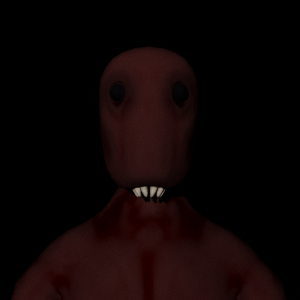

[Data not available at this time]
The Limosian cleansing is a debunked conspiracy theory created by the Cocytan Insurgency to call Oribitus’ ethics into question. The theory states that during the liberation of Limos, a genocide against the native Limosians began, and they were all replaced by Vulcans calling themselves Limosians.